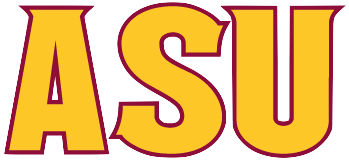

Schools
If you would like to know more about any of these schools, go ahead and click the image and it will take you to their website!
 |
University High schoolI attend University High school in Tolleson. Here we are ranked 21st in the country for best high schools, so I take and have taken a majority of AP and advanced classes throughout my highschool career. My favorite classes would be AP Physics and AP Calculus, because there is nothing like the satisfaction of completing a really difficult problem -the same goes for West-Mec Coding as well. |
|---|---|
 |
West-Mec CodingI also attend West-Mec Coding where I learned to code this very page. I come here after school to learn how to code in HTML, CSS, and Javascript languages. I attend coding every day after my regular high school and it helps me aquire skills in something outside of my core classes. If you care to know any more about that click the image on the left. |
|  |
ASU -InterestI hope to attend Arizona State University, because I want to attend an in-state college that is somewhat affordable. Although I could possibly get a job in coding as soon as this program is over, I hope to expand in education and earn a diploma in either computer science or Aerospace Engineering because I enjoy math and computers. |